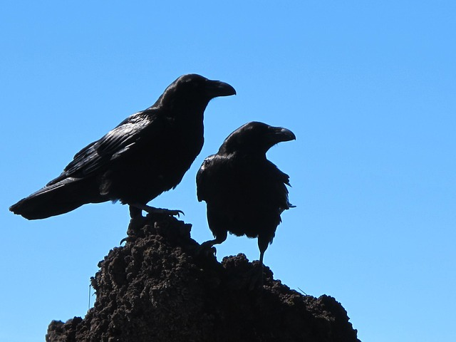
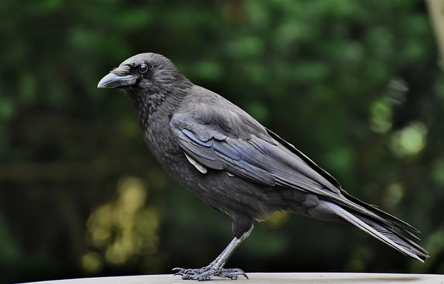
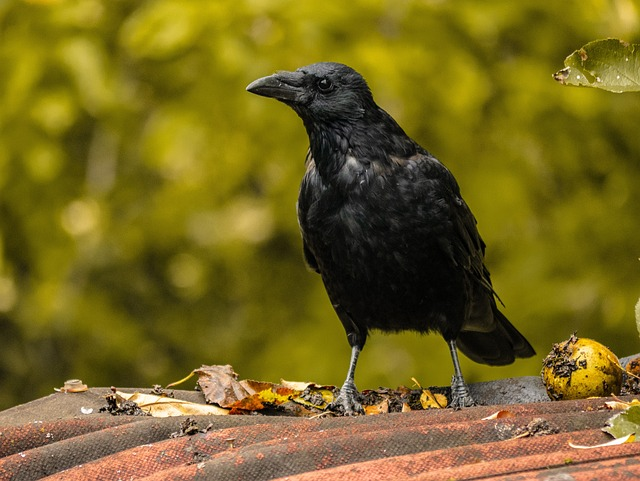

crow mates
most people know that crows mait for life, however did you know They will form strong emotional bonds with their partner and spend time with them? That said, some crows do “break up” and find other mates or have an open marriage: seriously. It’s not unusual for monogamous crows to mate with others temporarily, typically for a single season, and then return to their main partner.
baby crows
Like most freshly hatched birds, crows look like adorable little fluff balls! At first, though, they’re almost entirely naked and have large pink bills with blue eyes. These beautiful blue peepers set them apart from other young birds and are typically consistent from youth to juvenile ages. That makes baby crows easier to spot from adults if you happen to see them. Ezoic As they mature, their fluffy down will start out as a relatively light black and then darken to the beautiful mature black you see in adult crows. Those stray white feathers you might find in a baby crow’s plumage will disappear or fall out. Expect a juvenile crow to look indistinguishable from an adult after about a year: there are still some differences but nothing major.
Baby Crow Sightings
there’s a good chance you’ve probably actually seen baby crows without realizing it. How? Well, baby crows are about the same size as the average adult crow once they leave the nest. As a result, you probably mistook them for an adult or another type of bird. Their feathers tend to be puffier, and their mouth pink, but those are the only significant differences.
